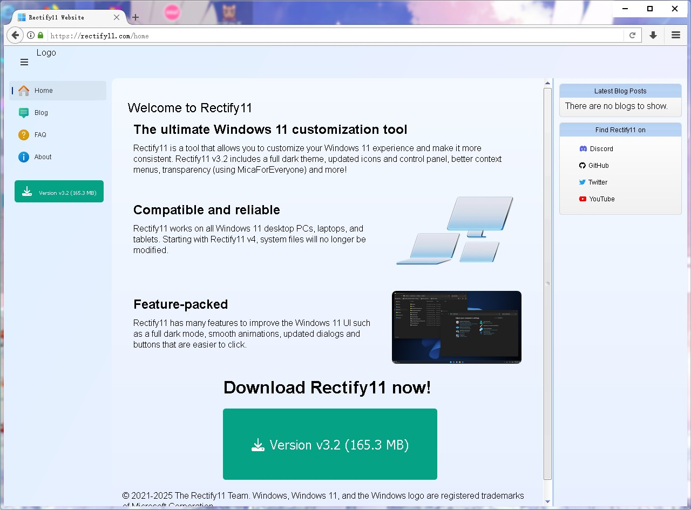
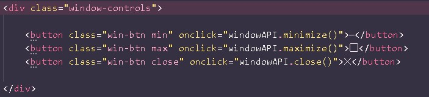
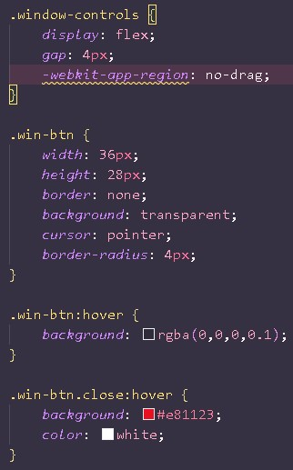
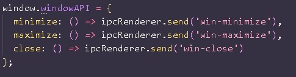
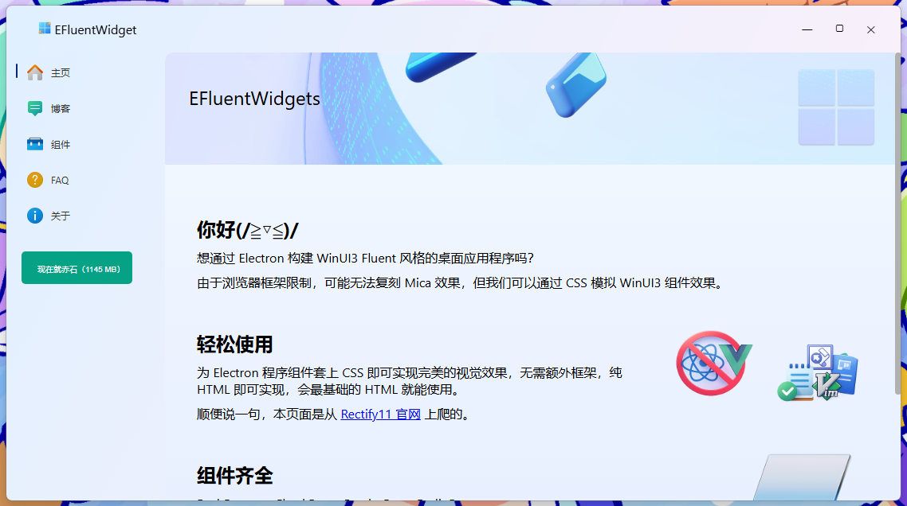

最近玩 Electron，突发奇想能不能让 Electron 桌面程序具有微软 Win11 的 Fluent 风格。
这听上去并非天方夜谭，微软很多程序套的 WebView，对于我们这些前端来说，只要长得像就行。
于是我就开始了我的探索之旅，还记得我的得意之作EasiNoteThemePatcher吗？这是一个希沃白板的主题补丁工具，使用 qfluentwidget 制作，因此具有了 Fluent 风格的外观，甚至还有 Mica 效果。
然后我又看到了 Rectify 11 的官网。你别说，还挺 Fluent。
那还说啥，HTTrack 启动！
先对网页进行简单分析，CSS 之类都好理解，就是 JavaScript 控制页面切换，菜单展开/收起等功能比较复杂，这里我把 JavaScript 都删了，然后直接 VibeCoding...
但是对于一个 Fluent 窗口，肯定不能用系统自带的标题栏，好在这个网页提供了一个标题栏（header），我们在 header 里保留 logobox，再加入窗口控制元素，代码如下：
再加上一些神奇的 CSS
这种 CSS 其实也不是很 Fluent，但是先暂时这么用着，因为后面还有操蛋的 IPC
为按钮绑定上事件，搞个全局 API
然后在主进程中监听这些事件，调用 Electron 的 API 来实现窗口控制。
对了，别忘了把系统的标题栏隐藏一下，frame: false; contextIsolation 我个人不建议开启，因为开了隔离感觉很不方便。
我们好不容易做了一个框框，肯定希望它能被多次复用，所以我们把 PageContent 留空，让 JavaScript 自己把需要的内容加载进去。
页面切换的话我就直接 a href，其实fetch。。也行？
看看 Win11 中的显示效果吧
等等，你哪来的 Mica？
骗你的，其实是 linear-gradient。
但对于浏览器框架，Mica 并不现实，除非后台挂个程序在窗口背后取色，这样属实不合法还有病。
现在框架有了，那组件呢？
我估计已经有现成的 CSS 可用了，这里我就不重复造轮子了。
总之，这只是一次小小的尝试，现在肯定是有成熟的解决方案的，Just for fun